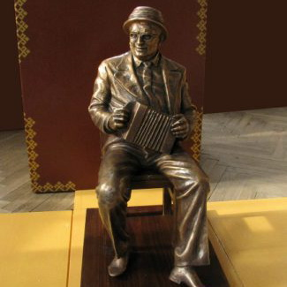
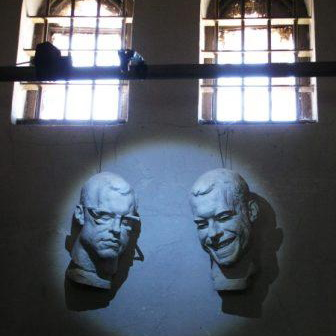
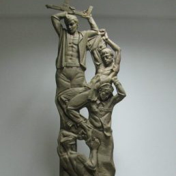
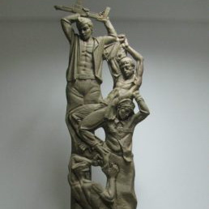

 


Ярослав Костко
Ярослав Костконародився в м. НовийРозділ, Львівської обл. Втілюєсвоїобрази в скульптурі, через індивідуальневідчуттяфігуративної пластики а такожїїінтерпретації. Дослідженнявнутрішніхпроцесів, різноманітнихстанів та емоційлюдини і оточуючогосередовища є підгрунтям для творчості.
Учасник ряду всеукраїнських та міжнароднихскульптурнихсимпозіумів та виставок в Україні, Туреччині, Молдові, Польщі. Працює в галузістанкової, монументальної та скульптурималих форм. Ряд робітзнаходяться в приватнихколекціях та встановлені в Україні та за кордоном.
Викладач кафедри Монументально Декоративної Скульптури ЛНАМ, член Національної Спілки Художників України.